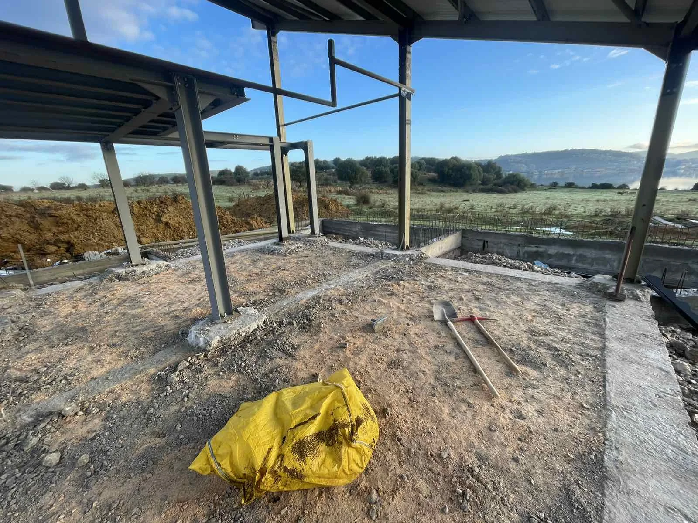

Skip to content
MI ARCHITECTS
Architecture · Construction
Home
Development
Construction
Services
Portfolio
Our Story
Contact
← All construction
Groundworks · Concrete
Ground & Frame
06 images / Construction journal
View full image ↗
01
The structural grid
View full image ↗
02
Preparing the site
View full image ↗
03
Pool formwork
View full image ↗
04
Concrete retaining walls
View full image ↗
05
Excavation and ground levels

View full image ↗
06
Framing the landscape
Next project
Kalamitsi
↗
✕
←
→